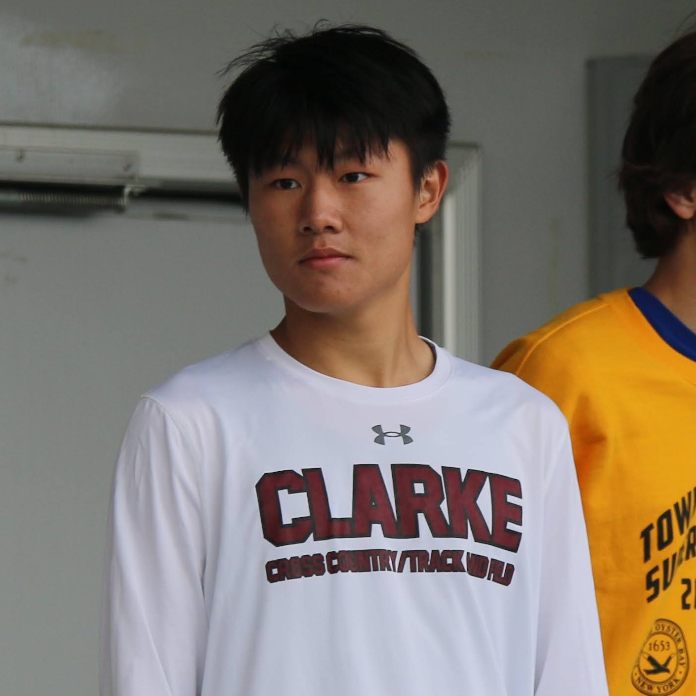

Kenny He

Email me
Follow my LinkedIn
Check Out My Projects
Education
- Bachelor of Science: Computer Engineering, University at Buffalo, The State University of New York
- Bachelor of Business Administration: Business Management, Adelphi University
- GPA: 3.9
- Dean's List (Fall 2022, Spring 2023)
Work Experience
- COURT INTERN, Queens Country Criminal Court, Queens, NY (July 2023-September 2023)
- Compiled a comprehensive spreadsheet with data visuals to present to court supervisors and their higher ups.
- WAITER, Haka Restaurant, Hicksville, NY (May 2023-July 2023)
- Appeared in the newspaper representing HAKA.
- CLERK INTERN, Inc. Village of Garden City, Garden City, NY (September 2022-May 2023)
- Completed filing of all physical documents onto the digital storage system.
- COACH, Nassau County PAL, East Meadow, NY (April 2022-July 2022)
- Created drills for kids ages 5 to 13.
Activities
- BlackStone Launchpad ArtUp BootCamp, Buffalo, NY (October 2023)
- Won 3rd place award of $250.
- Created an art-themed business idea and pitched within 3 hours.
- PRESIDENT, Tarzan Twins Book Club, Westbury, NY (July 2022-Present)
- Created a book club and recruited 4 members from 4 unique universities.
- Led monthly meetings with over 10 completed book reviews.
Skills
- Coding Languages: Python, C, HTML
- Microsoft Certifications: Excel, Word, PowerPoint